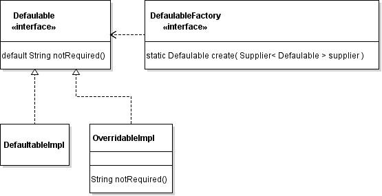

[TP]
Dans Eclipse, créer un nouveau projet formation-java de type Maven Project.
Ajouter les propriétés suivantes :
<properties>
<maven.compiler.source>1.8</maven.compiler.source>
<maven.compiler.target>1.8</maven.compiler.target>
</properties>
Exercice 1 : les nouveautés
Etape 1
Construire une classe Etape1 avec des lambda expressions :
- un attribut de type
Runnablepour faire un affichage « Exercice1.Etape1 », cette définition est faite sous la forme d’une lambda expression, - une méthode
mainpour faire les tests et appeler cette lambda expression, - ajouter à la méthode
mainune variablestrStringqui est un tableau deStringinitialisée avec les prénoms des stagiaires de la salle. Ensuite, il est demandé de trier les éléments de ce tableau à l’aide de la classeArrayset de sa méthodesort. Le second paramètre est un objet qui implémente l’interfaceComparable<E>. Ce second paramètre est à fournir sous la forme d’une lambda expression énonçant le tri.
Etape 2
Construire une classe Etape2 avec des références à des méthodes :
- une méthode static
doWorkqui permet d’afficher le nom du thread courant et attend une poignée de secondes avant de boucler 50 fois, - une méthode main pour faire les points suivants :
- créer un thread dont la méthode exécutée est
doWork, le démarrer, - créer un thread dont la méthode exécutée est donnée sous la forme d’une lambda expression qui appelle
doWork, le démarrer, - créer un thread de manière traditionnelle avec une classe anonyme implémentant
Runnabledont la méthoderunappelledoWork.
- créer un thread dont la méthode exécutée est
Etape 3
Construire une classe Etape3 qui utilise une interface fonctionnelle :
- définir une interface fonctionnelle nommée
Formatter, avec une obligation de codage nomméeformatqui prend en entrée une chaîne de caractères qui décrit un format et un nombre variable d’Object paramètres et qui retourne une chaîne de caractères, - une méthode static nommée
forEach, dont le but est d’afficher les éléments de la liste en utilisant le formatteur, ayant deux paramètres :- une liste de chaînes de caractères
- un formatter
- une méthode
mainpour faire les points suivants :- créer une liste de chaînes de caractères,
- appeler la méthode static
forEach2 fois avec la liste. La 1 ère invocation utilisera une référence à la méthodeString::format. La 2 ème invocation utilisera une lambda expression équivalente dont le corps invoque la méthodeformat.
Etape 4
Construire une classe Etape4 qui utilise une interface ayant des méthodes par défaut :

- définir une interface
Defaultablequi contient une méthodenotRequiredayant une implémentation par défaut. Sa signature est telle qu’elle ne prend pas de paramètre en entrée et retourne une chaîne de caractères. Celle-ci sera la chaîne de votre choix. - créer une classe
DefaultableImplqui implémente l’interface précédente mais ne contient aucune méthode, - faire une classe
OverridableImplqui implémente l’interface précédente mais redéfinit la méthode nomméenotRequired, - créer une interface
DefaultableFactoryayant une méthode static nomméecreatequi à partir d’unSupplierretourne un objet de classeDefaultable. - une méthode
mainpour faire les points suivants :- appeler la méthode
createavec en paramètre une référence au new de la classeDefaultableImpl, pour avoir un objet respectant l’interfaceDefaultable, - afficher le résultat de l’appel de la méthode
notRequiredsur cet objet, - appeler la méthode
createavec en paramètre une référence au new de la classeOverridableImpl, pour avoir un objet respectant l’interfaceDefaultable, - afficher le résultat de l’appel de la méthode
notRequired()` sur cet objet.
- appeler la méthode
Exercice 2 : Utilisation des expressions lambda
Rappel : la méthode compare de l’interface Comparator doit retourner une valeur négative si la 1 ère entrée est plus petite que la 2 ème entrée et ainsi de suite. Elle retourne une valeur positive si la 1 ère entrée est plus grande que la 2 ème . Elle retourne 0 si les deux entrées sont égales.
Rappel : pour afficher un tableau, il n’est pas possible de le passer en paramètre directement à la méthode println de PrintStream. Aussi, il est conseillé de procéder à une transformation System.out.println(Arrays.asList(tableau)) ; chaque élément du tableau sera séparé des autres par une virgule. De plus, c’est plus simple à écrire que de faire une boucle sur tous les éléments du tableau.
Etape 1 : niveau de base
Construire une classe Etape1 comprenant une méthode main où un tableau de String d’au moins 5 chaînes de caractères est créé et trié de plusieurs façons :
- Par longueur du plus petit au plus grand : utiliser la méthode length(),
- Par la propriété inverse (du plus grand au plus petit),
- Par ordre alphabétique sur le premier caractère (
charAt(0)retourne le code numérique du 1 er caractère), - Les chaînes de caractères qui contiennent un ‘e’ en premier, les autres en second.
- Dans ce dernier cas une seconde solution peut être fournie qui utilise une classe technique supplémentaire
StringUtilsqui possède une méthode staticeCheckeravec 2 paramètres qui applique ce critère de tri. Une référence à cette méthode est ensuite utilisée.
Etape 2 : utilisation de lambda expressions dans des interfaces
Le but est de faire une méthode static appelée betterString dans la classe StringUtils qui prend 2 chaînes de caractères et une lambda expression qui désigne laquelle des deux est la meilleure sur un critère comme :
- La plus grande des deux en longueur,
- La première dans l’ordre alphabétique.
Pour effectuer ce travail, il est demandé de définir une interface fonctionnelle TwoStringPredicate qui possède une obligation de codage nommée isBetter qui prend 2 String et retourne true ou false. Cette interface est utilisée dans la déclaration de la méthode betterString pour typer la lambda expression.
Etape 3 : utilisation de lambda expressions dans des interfaces génériques
Utiliser des interfaces génériques permet de remplacer plusieurs interfaces non génériques où des lambda expressions sont utilisées. Ainsi, il est demandé de remplacer la méthode betterString par une méthode betterEntry. Pour ce faire, il faut en premier définir une nouvelle interface générique TwoElementPredicate contenant une obligation de codage nommée isBetter qui est une méthode générique. Ensuite, il est demandé de construire une classe ElementUtils qui possède une méthode static générique à 3 paramètres nommée betterEntry :
- 2 paramètres du type de généricité,
- Une lambda expression typée par l’interface fonctionnelle
TwoElementPredicate.
Enfin, il faut construire une classe Etape3 basé sur la classe Etape2 mais utilisant la méthode betterEntry.
Maintenant, vous pouvez comparer le prix de deux voitures. Pour cela, il est demandé de définir une classe Car avec 2 attributs : name et price et ajouter une ligne à votre classe Etape3 pour comparer deux objet de classe Car.
Exercice 3 : Utilisation des streams
Toutes les étapes de cet exercice sont basées une liste de chaîne de caractères de la forme :
List<String> firstnames = Arrays.asList("Lisa", "Bart", "Maggie", "Marge", "Homer", "Apu", "Mandula");
- Produire une seule chaîne qui est le résultat de la concaténation des versions majuscules de toutes les chaînes. Utilisez une seule opération de réduction, sans utiliser de map,
- Produire la même chaîne que ci-dessus, mais cette fois par une opération de map qui transforme les mots en majuscules, suivie d’une opération de réduction qui les enchaîne.
- Produire une chaîne qui est tous les mots enchaînés ensemble, mais avec des virgules entre les deux. Notez qu’il n’y a pas de virgule au début, avant le 1 er prénom, et pas de virgule à la fin, après le dernier prénom. Indice majeur: il existe deux versions de réduction: l’une avec une valeur de départ, et l’autre sans une valeur de démarrage.
- Faites une méthode statique dans une classe
StreamUtilsqui produit une liste d’une longueur spécifiée par nombres aléatoires.
Exercice 4 : WordCount, le Hello World du MapReduce
Dans cet exercice, le but est de réaliser un programme permettant de compter le nombre d’occurrences de chaque mot d’un texte en utilisant un algorithme MapReduce.
Le fichier à analyser est ici .
Pour aller plus loin
Enlever les mots les plus courants dans le comptage à l’aide du fichier stop-words-en.json (disponible ici)
Utiliser la dépendance suivante pour manipuler du JSON
<dependency>
<groupId>org.json</groupId>
<artifactId>json</artifactId>
<version>20160810</version>
</dependency>
Exemple
JSONArray a = new JSONArray("["toto", "titi", "tata"]");
List<String> list = new ArrayList<String>();
a.forEach(o -> list.add(((String)o)));